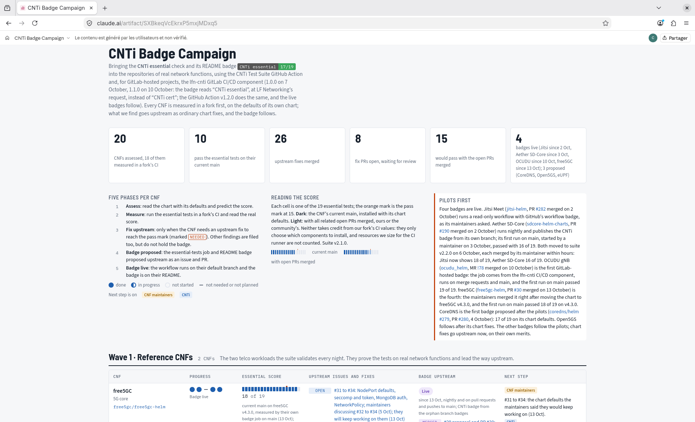

2026/10/16
cnf-testsuite renamed to cnti-testsuite
and refocused on CNF essential and workload suites--options,
kebab-case arguments, bash/zsh completion, classified exit codescnti/ workspace,
nothing unnecessary installedThe CNTi workload suite is trustworthy
lfn-cnti/testsuite-actionCNTi essential 16/19 (passed / maximum), green when the
objective is met